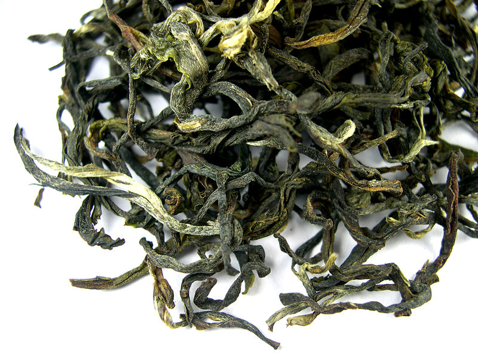

Coffee is a brewed beverage with a distinct aroma and flavor, prepared from the roasted seeds of the Coffea plant. It is one of the most consumed drinks in the world. Many studies have examined the health effects of coffee, and whether the overall effects of coffee consumption are positive or negative has be widely disputed. The method of brewing coffee has been found to be important in relation to its effects on health. For instance, preparing coffee in a French press leaves more oils in the drink compared with coffee prepared with a paper coffee filter. This might raise the drinker's level of "bad cholesterol."

Tea is an aromatic beverage commonly prepared by pouring hot or boiling water over cured leaves of the tea plant, Camellia sinensis. After water, tea is the most widely consumed beverage in the world. It has a cooling, slightly bitter, astringent flavour that many people enjoy. Tea has been promoted for having a variety of positive health benefits, though generally these benefits have not been adequately demonstrated in humans. The phrase "herbal tea" usually refers to infusions of fruit or herbs made without the tea plant, such as rosehip tea, chamomile tea or rooibos tea. Alternative phrases for this are tisane or herbal infusion, both bearing an implied contrast with "tea" as it is construed here.